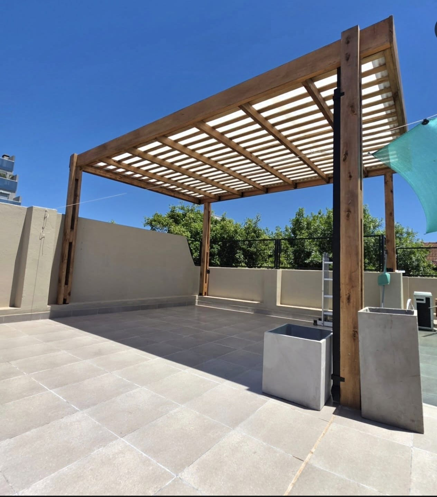
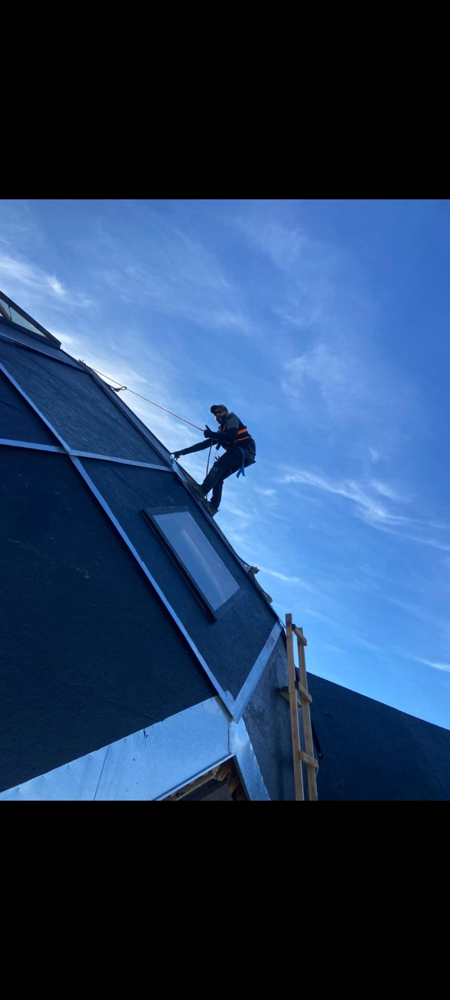

Pérgola en Terraza
Diseño a medida con cobertura translúcida.
Unimos innovación técnica con una vasta trayectoria para ofrecerte eficacia y resultados reales. En El Faro Constructora garantizamos la calidad y la presentación impecable de cada obra.
⭐ Personal Matriculado & Inspección Final
En El Faro Constructora, te acompañamos durante todo el proceso de ejecución, respetando tu visión original y aplicando los más estrictos estándares de calidad.
Nuestra vasta experiencia y la capacitación de nuestro personal nos permiten brindarte un servicio superior: ágil, eficiente y totalmente enfocado en tus objetivos.
Como sello de confianza, cada uno de nuestros trabajos es sometido a una exhaustiva inspección de calidad final, garantizando la excelencia en cada detalle.
